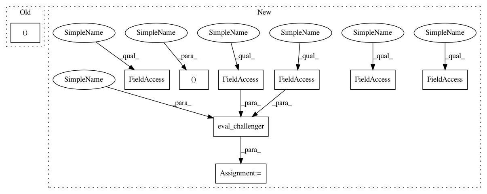

22d54408bf1bf47841a5798ebbeaba858f13fc76,test/test_intensify/test_intensify.py,TestIntensify,test_eval_challenger_3,#TestIntensify#,598
Before Change
instance_id=1, seed=None, additional_info=None)
// intensification - incumbent will be run, but not as RUN_FIRST_CONFIG stage
config, _ = intensifier.get_next_challenger(challengers=[self.config2], chooser=None)
inc, _ = intensifier.eval_challenger(challenger=config, incumbent=self.config1, run_history=self.rh, )
self.assertEqual(intensifier.stage, IntensifierStage.RUN_CHALLENGER)
After Change
instance_id=1, seed=None, additional_info=None)
// intensification - incumbent will be run, but not as RUN_FIRST_CONFIG stage
intent_, run_info = intensifier.get_next_run(
challengers=[self.config2],
incumbent=self.config1,
run_history=self.rh,
chooser=None
)
result = eval_challenger(run_info, taf, self.stats, self.rh)
inc, perf = intensifier.process_results(
challenger=run_info.config,
incumbent=self.config1,
run_history=self.rh,
time_bound=np.inf,
result=result,
)
In pattern: SUPERPATTERN
Frequency: 3
Non-data size: 9
Instances
Project Name: automl/SMAC3
Commit Name: 22d54408bf1bf47841a5798ebbeaba858f13fc76
Time: 2020-08-14
Author: 44504424+franchuterivera@users.noreply.github.com
File Name: test/test_intensify/test_intensify.py
Class Name: TestIntensify
Method Name: test_eval_challenger_3
Project Name: automl/SMAC3
Commit Name: 22d54408bf1bf47841a5798ebbeaba858f13fc76
Time: 2020-08-14
Author: 44504424+franchuterivera@users.noreply.github.com
File Name: test/test_intensify/test_successive_halving.py
Class Name: TestSuccessiveHalving
Method Name: test_eval_challenger_2
Project Name: automl/SMAC3
Commit Name: 22d54408bf1bf47841a5798ebbeaba858f13fc76
Time: 2020-08-14
Author: 44504424+franchuterivera@users.noreply.github.com
File Name: test/test_intensify/test_hyperband.py
Class Name: TestHyperband
Method Name: test_eval_challenger